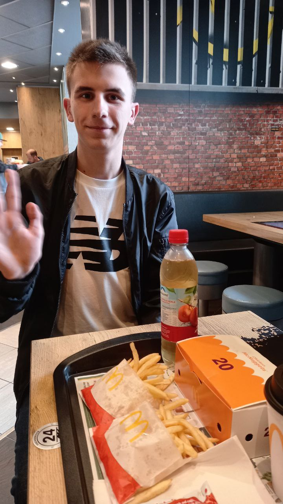
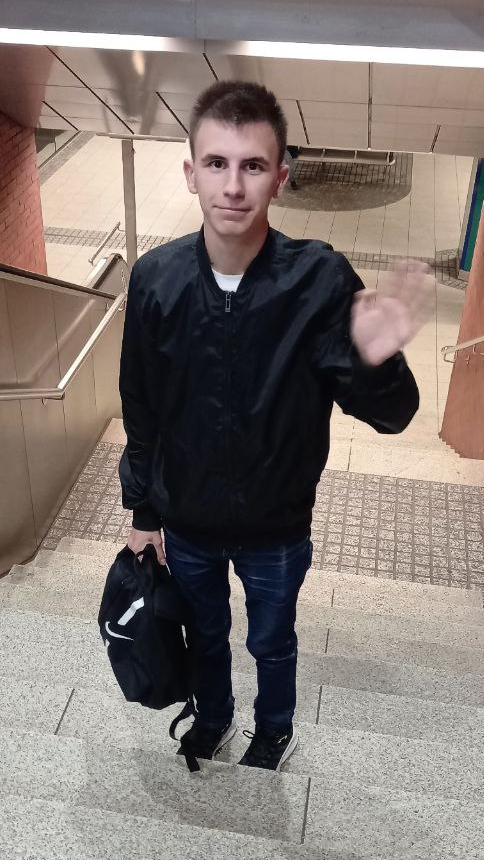

Email: vladimirbai08@gmail.com
| Предмет | Викладач | Оцінка |
|---|---|---|
| Математична логіка | Татарінова О.А., Андрєєв Ю. М. | 75 |
| Організація баз даних | Мартиненко Г.Ю. | 98 |
| Програмування GUI | Броварник О.О. | 87 |
| Програмування комп'ютерної графіки | Сенько А.В. | 75 |
| Технлогії Програмування | Шаповалова М.І., Сенько А.В. | 77 |
| Іноземна мова | Ларченко В.В. | 87 |
| ОК СВУ | Клименко О.І. | 84 |
| Правознавство | Кузьменко О.В. | 93 |


«Ваша робота заповнить більшу частину вашого життя, і єдиний спосіб бути повністю задоволеним — робити те, що ви вважаєте великою справою. А єдиний спосіб робити велику справу — любити те, що ви робите».
— Стів Джобс
Донецьк — велике місто на сході України, засноване у 1869 році. Спочатку воно мало назву Юзівка на честь свого засновника Джона Юза. Місто було одним із найбільших промислових центрів України та відоме стадіоном «Донбас Арена» і парком кованих фігур.